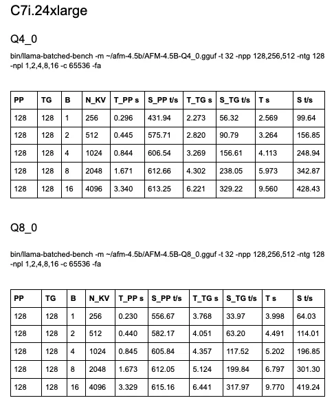
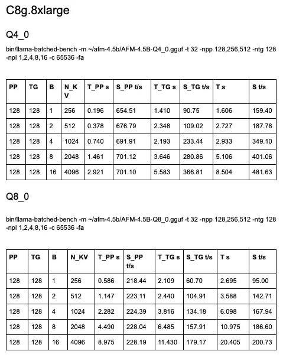

The combination of smaller yet more efficient language models, advances in open-source inference frameworks, and hardware acceleration is enabling an unprecedented pace of innovation for CPU inference.
A little over a month ago, we published a blog post sharing numbers forAFM-4.5Binference on Intel Corporation, Arm, and Qualcomm (see: "Is Running Language Models on CPU Really Viable?").
I reran the Intel and Arm benchmarks in the same configuration, and all numbers have improved across the board, with some increases of up to 50%. You’ll find numbers at the end of the post.
Same model. Same chips. What happened? Llama.cpp is on fire, that's what. New features, such assplitting the KV cache across sequence decoding, are delivering double-digit gains overnight.
Takeaways:
➡️ If you're been using GPU inference indiscriminately, it's time to reconsider. Your existing CPU servers may be an extremely cost-effective option, and they can also run your app!
➡️ If you're not rebuilding llama.cpp every day, you're doing it wrong 😂
➡️ We used to pick between 'fast but less imprecise 4-bit' vs 'slow but more precise 8-bit'. That's not so true anymore. 8-bit models are now fast enough (whatever that means to you) for many use cases.
➡️ The speedup on larger batch sizes definitely invalidates my long-standing advice of "CPU inference only really makes sense at batch size 1". Now, I would consider larger batch sizes, especially for non-interactive workloads, and experiment to find the sweet spot between thread count, latency, and throughput.
What truly puts a smile on my face is that these aren't even the bleeding-edge CPUs. There's much more speed coming.
And this story ends on laptops and devices for minimal latency, maximum cost optimization, and full privacy. Many of us know that already 😀
